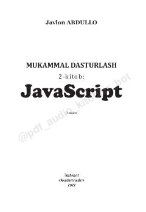

MDJavaScript dasturlash tilini o'rganish bo'yicha amaliy qo'llanma.
Ushbu kitob zamonaviy veb-dasturlashni o'rganmoqchi bo'lganlar uchun JavaScript tilining asoslari va imkoniyatlarini sodda tilda tushuntiradi. Muallif o'zining ko'p yillik tajribasiga asoslanib, front-end dasturlash va veb-texnologiyalar bo'yicha amaliy ko'rsatmalarni taqdim etadi.